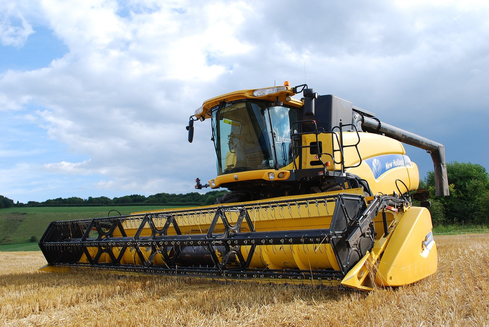

SOLUTECH
Inteligências Artificiais Generativas
Confira alguns exemplos abaixo:
1. O que são IAGs?
Inteligências Artificiais Generativas (IAGs) são um tipo de algoritmo ou modelo de aprendizado de máquina que tem a capacidade de gerar conteúdo original, como texto, imagens, música e até mesmo vídeos. Ao contrário de outros algoritmos de aprendizado de máquina, que são projetados para classificar dados ou realizar tarefas específicas com base em exemplos pré-existentes, as IAGs são capazes de criar novas informações por conta própria.

2. Como funcionam?
As IAGs são alimentadas com um conjunto inicial de dados de treinamento e, a partir desses dados, elas aprendem a capturar padrões e características essenciais. Com base nesse aprendizado, as IAGs podem gerar novas amostras que se assemelham ao estilo e ao conteúdo do conjunto de treinamento original.
3. Utilização na agricultura
Geração de dados agrícolas: As IAGs podem ser usadas para gerar dados agrícolas sintéticos ou aumentar conjuntos de dados existentes. Isso é especialmente útil quando há escassez de dados ou quando é necessário ampliar as informações disponíveis para treinar modelos de aprendizado de máquina. Otimização de cultivos: As IAGs podem ajudar na otimização de práticas agrícolas, como a escolha das melhores variedades de culturas, a determinação da quantidade adequada de nutrientes e água para as plantas, o controle de pragas e doenças, e o manejo de culturas em geral. Elas podem gerar recomendações personalizadas com base em dados coletados em tempo real, condições climáticas e históricos de cultivo.
